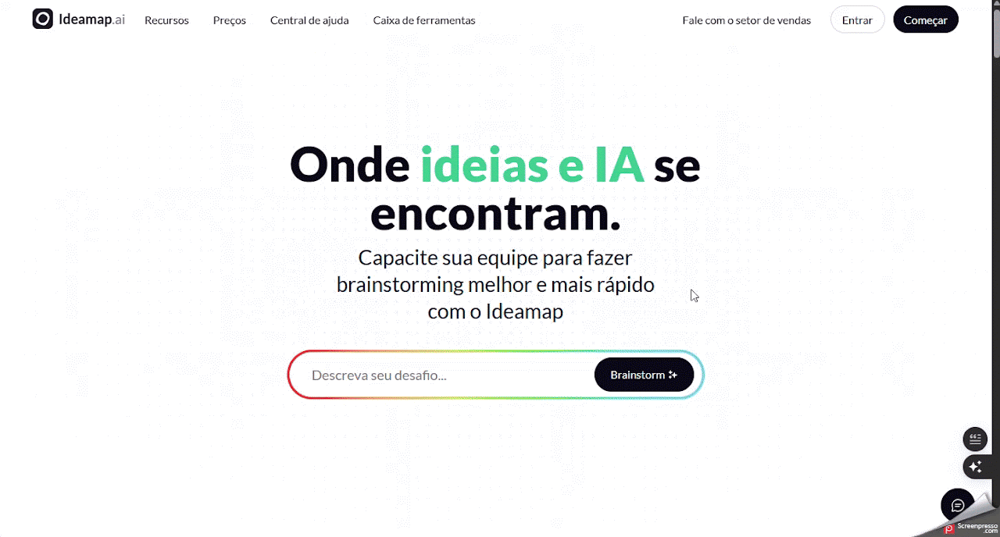
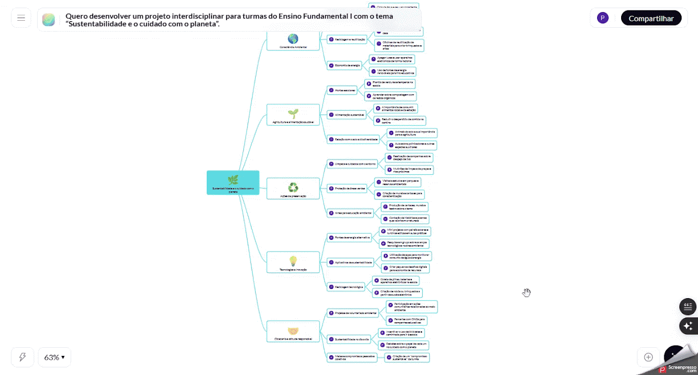

Ideamap AI
Ferramenta voltada ao mapeamento de ideias para apoiar a organização visual de conteúdos e brainstormings no planejamento pedagógico.
Ficha técnica
Visão geral
O que é o Ideamap?
O Ideamap é uma ferramenta de brainstorming baseada em IA, projetada para auxiliar equipes na geração e organização de ideias. A plataforma oferece um espaço visual interativo onde os usuários podem colaborar em tempo real, utilizando recursos como geração automática de ideias, categorização inteligente e co-pilotagem por IA. É ideal para sessões de brainstorming, planejamento de projetos e desenvolvimento de estratégias.
Fluxo de uso
Como utilizar o Ideamap AI
Etapa 1
Cadastro e Acesso
- Acesse o site oficial: https://ideamap.ai/pt-br.
- Crie uma conta gratuita.
- Clique em "Começar" e registre-se usando seu e-mail ou conta do Google.
- Escolha seu espaço de trabalho.
- Selecione entre "Para minha equipe" ou "Para mim" e clique em "Continuar".

Etapa 2
Criando um Brainstorm
- Inicie uma nova sala.
- Clique em "Nova Sala" no painel lateral.
- Descreva o tema ou desafio com uma frase, pergunta ou tópico.
- Exemplo: "Como melhorar a experiência do cliente em nosso aplicativo móvel?"
- Clique em "Brainstorm" para que a IA sugira ideias relacionadas ao tema.

Etapa 3
Organizando e Refinando Ideias
- Agrupe ideias semelhantes com a função "Agrupar em Tópicos".
- Edite e desenvolva ideias clicando em cada item.
- Adicione comentários ou expanda sugestões com apoio da IA.
- Utilize copilotos de IA, como o "Grumpy Gus", para obter perspectivas críticas e diversificadas.
Etapa 4
Colaboração em Tempo Real
- Clique em "Compartilhar" e envie o link da sala para seus colegas.
- Trabalhe com a equipe na mesma sala, adicionando e refinando ideias em tempo real.
- Utilize recursos como votação comparativa e métodos como SCAMPER para conduzir sessões de brainstorming mais eficazes.
Etapa 5
Compartilhamento
- Exporte mapas mentais em PDF para análise posterior.
- Integre o Ideamap com plataformas como Microsoft Teams para uma colaboração mais fluida.
- Transforme os mapas mentais em apresentações visuais para compartilhar com stakeholders.

Informações Complementares
Dicas adicionais
- Utilize templates prontos para iniciar sessões de brainstorming com estruturas já definidas.
- Personalize seu espaço de trabalho com cores, fontes e layouts.
- Explore recursos avançados, como geração de imagens a partir de ideias e análise de sentimentos.
Aplicação pedagógica
Uso em contexto educacional
- Organização visual de conteúdos para planejamento pedagógico.
- Estruturação de brainstormings voltados à criação de material pedagógico.
- Construção de mapas mentais para planejamento ou revisão de conteúdo.